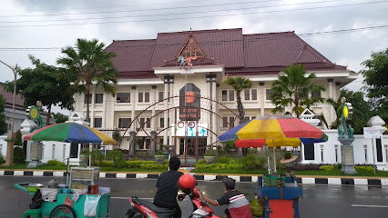

1. Alun-alun Tuban
Ruang publik utama kota Tuban, tempat berkumpul, rekreasi keluarga, dan kuliner malam hari.

2. Jatiwangi Park
Taman rekreasi modern dengan berbagai wahana air dan fasilitas bermain yang cocok untuk keluarga.

3. Tanazawi Edupark
Taman edukasi dan rekreasi yang berfokus pada pertanian dan alam, menawarkan pengalaman belajar yang menyenangkan.

4. Agro Park Klumpit
Kawasan wisata agro yang menyajikan kebun buah, peternakan, dan spot foto menarik di area perbukitan.

5. Ekowisata Pelang
Destinasi yang memadukan wisata alam dan edukasi dengan fokus pada kebun sagu yang dikelola secara berkelanjutan.

6. Kampung Batik Margorejo
Kawasan sentra industri rumahan batik Tuban, menawarkan *workshop* singkat dan produk batik berkualitas.